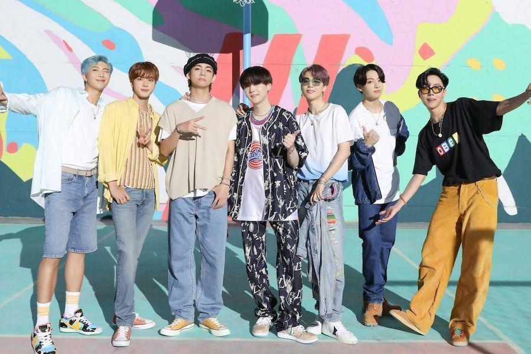

BTS (en hangul, 방탄소년단; romanización revisada del coreano, Bangtan Sonyeondan) es una boy band surcoreana formada en Seúl en 2010. Está compuesta por siete integrantes: Jin, Suga, J-Hope, RM, Jimin, V y Jungkook. Debutó el 13 de junio de 2013, bajo la compañía Big Hit Entertainment, con la canción «No More Dream», incluida en su primer sencillo 2 Cool 4 Skool.
A pesar de haber sido creado con un estilo principalmente hip hop, su repertorio musical ha evolucionado para incluir una gran variedad de géneros.Se caracteriza por crear álbumes conceptuales con influencias en obras literarias y de psicología,
con temas tales como la salud mental, la pérdida, el proceso de amor propio y el individualismo.
Los miembros fueron incluidos en la edición internacional de la revista Time como «Líderes de la nueva generación», y fueron parte de la lista de las personas más influyentes del mundo en 2019.
Forbes Corea los reconoció como las celebridades más destacadas del país en 2018 y 2020, en tanto que el grupo se posicionó en el número 43 de la Forbes Celebrity 100 de 2019 como una de las boy bands con mayores ingresos del mundo.
Tras establecer su campaña antiviolencia Love Myself, en colaboración con UNICEF, BTS dio un discurso en la edición 73 de la Asamblea General de las Naciones Unidas.
Posteriormente, sus integrantes se convirtieron en los receptores más jóvenes de la Orden al Mérito Cultural, otorgada por el gobierno surcoreano por ayudar a expandir la cultura y el idioma coreano en el mundo.
 En el mundo del K-pop, los grupos están totalmente «fabricados»; pasan por un intenso proceso de preparación y ensayo para que sean perfectos cuando se presentan al público. Las empresas más importantes de la industria del pop coreano, que son como sellos discográficos,
son S. M. Entertainment —detrás de los grupos H.O.T, S.E.S. y Girl’s Generation, entre otros— e YG Entertainment, y llevan principalmente grupos con un trasfondo de hip-hop.
Los «ídolos», que es como se conoce a los miembros de los grupos de K-pop, pasan por una intensa preparación, que incluye incluso cambios estéticos, para hacer un grupo cohesionado.
Pero ¿cómo empezó todo esto? En la industria musical occidental, cuando un cantante empieza a destacar en internet, las compañías discográficas suelen mostrar interés y ofrecer un contrato discográfico.
En el mundo del K-pop, las cosas avanzan de una manera algo diferente. Los jóvenes que sueñan con convertirse en «ídolos» del pop coreano van tras las discográficas y pasan por varias audiciones.
Si les seleccionan, ensayan durante meses, incluso años, antes de empezar a actuar. Los grupos son la parte más fascinante del mundo del K-pop. En los últimos años, han debutado más de 240 grupos, y muchos de ellos han conseguido triunfar más allá de Corea del Sur.
En el mundo del K-pop, los grupos están totalmente «fabricados»; pasan por un intenso proceso de preparación y ensayo para que sean perfectos cuando se presentan al público. Las empresas más importantes de la industria del pop coreano, que son como sellos discográficos,
son S. M. Entertainment —detrás de los grupos H.O.T, S.E.S. y Girl’s Generation, entre otros— e YG Entertainment, y llevan principalmente grupos con un trasfondo de hip-hop.
Los «ídolos», que es como se conoce a los miembros de los grupos de K-pop, pasan por una intensa preparación, que incluye incluso cambios estéticos, para hacer un grupo cohesionado.
Pero ¿cómo empezó todo esto? En la industria musical occidental, cuando un cantante empieza a destacar en internet, las compañías discográficas suelen mostrar interés y ofrecer un contrato discográfico.
En el mundo del K-pop, las cosas avanzan de una manera algo diferente. Los jóvenes que sueñan con convertirse en «ídolos» del pop coreano van tras las discográficas y pasan por varias audiciones.
Si les seleccionan, ensayan durante meses, incluso años, antes de empezar a actuar. Los grupos son la parte más fascinante del mundo del K-pop. En los últimos años, han debutado más de 240 grupos, y muchos de ellos han conseguido triunfar más allá de Corea del Sur.